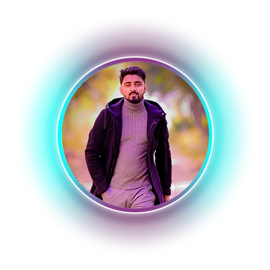

Hello there! I'm Raj Yadav, a passionate and results-driven
full-stack developer with a keen interest in
creating innovative and efficient solutions. I thrive in
dynamic environments where I can apply my technical expertise
to solve real-world problems.I am a beginner web designer with
over a 8 or 9 Month. My journey has equipped me with a deep
understanding of the software development lifecycle and the
ability to adapt to evolving technologies. As a full-stack
developer, I specialize in both front-end and back-end
technologies. On the front end, I have a knack for crafting
responsive and intuitive user interfaces using cutting-edge
technologies like React.js Thank you for visiting my profile.
I look forward to connecting with like-minded professionals
and contributing my skills to exciting projects.